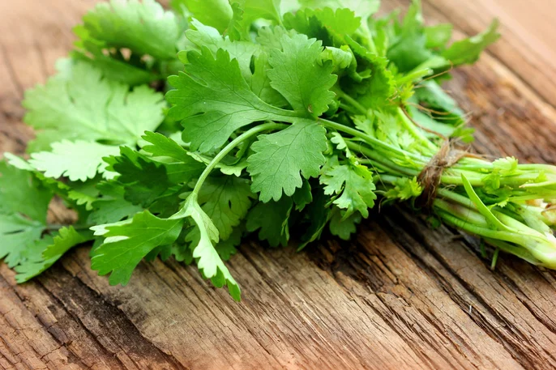
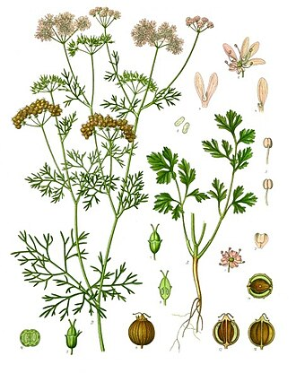

O coentro possui atividade antioxidante (concentrada principalmente no caule e folhas da erva) em alimentos, é capaz de inibir a oxidação ao atuar como um sequestrador de radicais livres e de oxigênio, quelante e agente redutor. Dessa forma, pode ser adicionado na indústria alimentícia como um aditivo responsável pela conservação do produto final, aumentando sua vida de prateleira. Além disso,o composto linalol auxilia no efeito cardioprotetor de redução da pressão arterial por causa da sua capacidade de vasodilatação provocada pelos flavonóides inibidores da enzima conversora de angiotensina (proteína responsável pela contração dos vasos sanguíneos), e outros benefícios cardioprotetores como seus efeitos antiarrítmico, melhora do perfil lipídico e biomarcadores cardíacos ou enzimas e ainda possui ação analgésica útil para alívio de sintomas como enxaqueca.
| Pesto de Coentro | Bolinho do mar | Abobrinha com creme de tofu e coentro |
|---|---|---|
| Coloque no processador o coentro, as castanhas, o parmesão ralado e o alho. Processe e, gradualmente, vá despejando o azeite para formar uma mistura homogênea. Sirva o molho com o acompanhamento de sua preferência | Coloque a cebola, o alho e o pimentão em uma frigideira aquecida com azeite. Refogue-os brevemente. Adicione o palmito desfiado, o azeite de dendê, o leite de coco, o sal, o lemon peper e a pimenta-do-reino e mexa até o palmito ficar macio. Deixe o palmito esfriar por cerca de 15 minutos. Acrescente a alga nori e ajuste os temperos. Transfira toda a mistura fria para um recipiente e junte o coentro picado e a farinha de trigo. Mexa bem até formar uma massa uniforme. Molde os bolinhos com as mãos no tamanho e formato que preferir. Leve os bolinhos ao freezer para firmarem por aproximadamente 15 minutos. Empane os bolinhos inicialmente na farinha de trigo, então no leite de coco e por fim na farinha panko. Frite-os em óleo quente e sirva quentinhos. Bom apetite. | Em uma panela, aqueça o azeite e junte a abobrinha, a cebola picada, a cebola em pó, o alho, a páprica, o sal e o orégano. Refogue por alguns minutos, mexendo às vezes para não grudar no fundo. Enquanto isso, em um liquidificador, bata o tofu com um pouco de água, alho em pó e sal até formar um creme. Acrescente o coentro e triture novamente até incorporar e ficar homogêneo. Junte o creme branco na panela, misture, acerte o sal e cozinhe até ferver. Agora é só servir! Bom apetite |
Origem do Coentro
Quando o coentro entra na fase de floração, a planta concentra sua energia na produção de flores e sementes, razão pela qual as folhas ficam mais finas e menos densas. Em outras palavras, o famoso brotos de coentro. Isso acontece quando as temperaturas sobem e os dias ficam mais longos.
A colheita do coentro deve ser feita quando as plantas atingem entre 20 a 30 cm de altura, com folhas bem desenvolvidas, e é importante colher de forma cuidadosa para preservar a planta.
Quando Colher? Altura Ideal: O coentro deve ser colhido quando atinge uma altura de 20 a 30 cm e apresenta folhas bem formadas. Isso geralmente ocorre entre 30 a 70 dias após o plantio, dependendo das condições de cultivo. Momento do Dia: O ideal é colher as folhas pela manhã, quando a umidade está mais baixa, para preservar o sabor e a qualidade do produto.Técnicas de Colheita Colheita Manual: A forma mais comum de colher coentro é manualmente. Utilize uma faca ou tesoura limpa para cortar as folhas, evitando danificar a planta.
Corte das Folhas: Corte as folhas externas, sempre deixando o centro da planta intacto para que ela continue a crescer.
Isso permite colheitas contínuas ao longo do tempo. Evitar Arrancar a Planta: Não é recomendado arrancar a planta inteira, a menos que você deseje usar a raiz ou se a planta já estiver florescendo. O ideal é colher folha por folha.Cuidados Após a Colheita Armazenamento: Após a colheita, as folhas devem ser lavadas e secas antes de serem armazenadas em sacos plásticos ou recipientes herméticos. O armazenamento em geladeira é recomendado para prolongar a frescura.
Irrigação e Luz: Durante o cultivo, mantenha o solo úmido, mas evite o encharcamento. O coentro precisa de pelo menos 4 horas de luz direta por dia.
| Tabela Nutricional | % VD (*) |
|---|---|
| Calorias (valor energético) | 12.88 kcal (0.64%) |
| Carboidratos líquidos | 0.51 g |
| Carboidratos | 0.91 g (0.30%) |
| Proteínas | 0.65 g (0.22%) |
| Gorduras totais | 0.00 g (0.00%) |
| Gorduras saturadas | 0.00 g (0.00%) |
| Fibra alimentar | 0.40 g (1.60%) |
| Sódio | 6.75 mg (0.28%) |
(*) % Valores Diários de referência com base em uma dieta de 2.000 kcal. Seus valores podem ser maiores ou menores dependendo de suas necessidades energéticas.
(**) Carboidratos líquidos são aqueles que o corpo consegue digerir e, geralmente, não incluem fibras.
| Nome Científico | Nome Popular | Origem | Uso Principal | Características |
|---|---|---|---|---|
| Coriandrum sativum | Coentro comum | Mediterrâneo | Folhas e sementes na culinária | Sabor marcante, ciclo rápido, folhas delicadas |
| Eryngium foetidum | Coentro-do-pará | América Tropical | Culinária regional (Norte/Nordeste) | Folhas longas, aroma mais intenso, resistente ao calor |
| Coriandrum sativum var. microcarpum | Coentro europeu | Europa | Produção de sementes | Sementes menores, aroma mais suave |
| Coriandrum sativum 'Slow Bolt' | Coentro slow bolt | Cultivar comercial | Cultivo em clima quente | Demora para florescer (não “espiga” rápido) |
| Coriandrum sativum 'Santo' | Coentro santo | México | Culinária mexicana | Sabor forte, folhas resistentes |